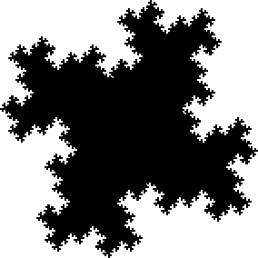

| Because the length of fractal perimeters increases without bound as the scale at which
they are measured goes to 0, Mandelbrot's idea (chapter 12 of Fractal
Geometry of Nature) is
to compare perimeters of similar regions, measured at the same scale. |
| Here are two similar regions, R1 and R2, with fractal perimeters. |
| R1 |  |
 |
R2 | |
|
| Choose a scale s and let A1(s) and A2(s) denote the areas of
R1 and R2 measured by covering the regions with squares of side length s. |
| As an intermediate stage in the calculation, we measure the length of each perimeter at a scale |
| ti = q⋅(√Ai(s)) |
| that depends on the area of the region, and on an arbitrary
scaling factor q, a small number guaranteeing that the ti are small enough to pick up fine
details of the perimeters. |
| Measured at these scales, the lengths of the perimeters are |
| P1(t1) = N1⋅t1 and
P2(t2) = N2⋅t2. |
| The important observation is that because R1 and R2 are similar,
N1 = N2.
Call this number N. |
| Next, note that if the length of a fractal curve of dimension d is measured at two scales, a and b, then the
lengths satisfy |
| P(a) = P(b)⋅(a/b)1-d |
| Returning to the original scale s, we see |
| Pi(s) | = Pi(ti)⋅(s/ti)1-d |
| = N⋅ti⋅(s/ti)1-d |
| = N⋅s1-dtid |
| = N⋅s1-d⋅qd⋅Ai(s)d/2 |
|
| Note the value of each of N, s, q, and d is the same for both regions. Consequently, for two similar regions
with perimeters of dimension d, when the areas of the regions and the lengths of the perimeters are measured at the
same scale s, we have |
| P1(s)/P2(s) = (A1(s)/A2(s))d/2 |
| This is the area-perimeter relation for regions having fractal boundaries. |
|
|
|
|